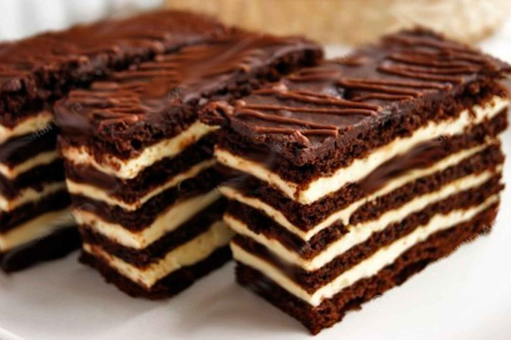
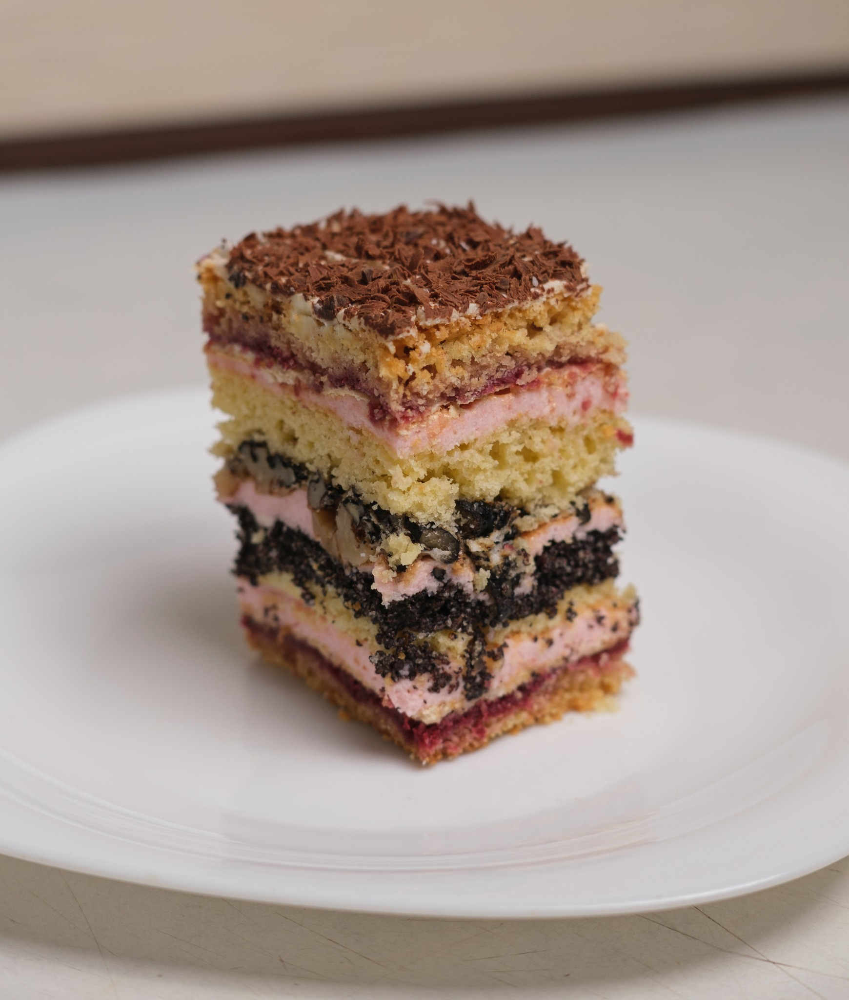
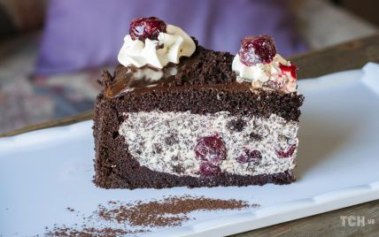
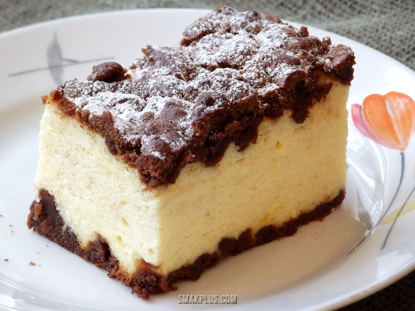

|  |
СпартакЦей смаколик складається з шоколадно-медових коржів, перемащених масляно-заварним кремом. Він настільки ніжний, що можна їсти "губами"! 256.00₴ |
|  |
ВишиванкаТакі торти – тістечка виходять ароматними, багаті поєднанням смаків, безмірно солодкими і запаморочливо смачно! 242.00₴ |
|  |
П'яна вишняЦей бісквітно-шоколадно-вишневий торт – справжня класика. Він славиться насиченим смаком та ніжністю. Варіантів його приготування чимало. Головне ж – чудове і неповторне поєднання шоколаду і вишні. 250.00₴ |
|  |
СирникЛьвівський сирник – найпопулярніший десерт, яким по праву пишається західно-українська кухня. Це не банальна сирна запіканка. Для його виготовлення береться тільки найкращий і свіжий кисломолочний сир найвищої жирності, свіжі домашні яйця, які, до того ж, вводяться окремо (жовтки і збиті в піну білки) і поступово. У результаті виходить ніжний сирний пиріг під шоколадною помадкою, який за смаковими властивостями не поступається розкішному торту. 220.00₴ |